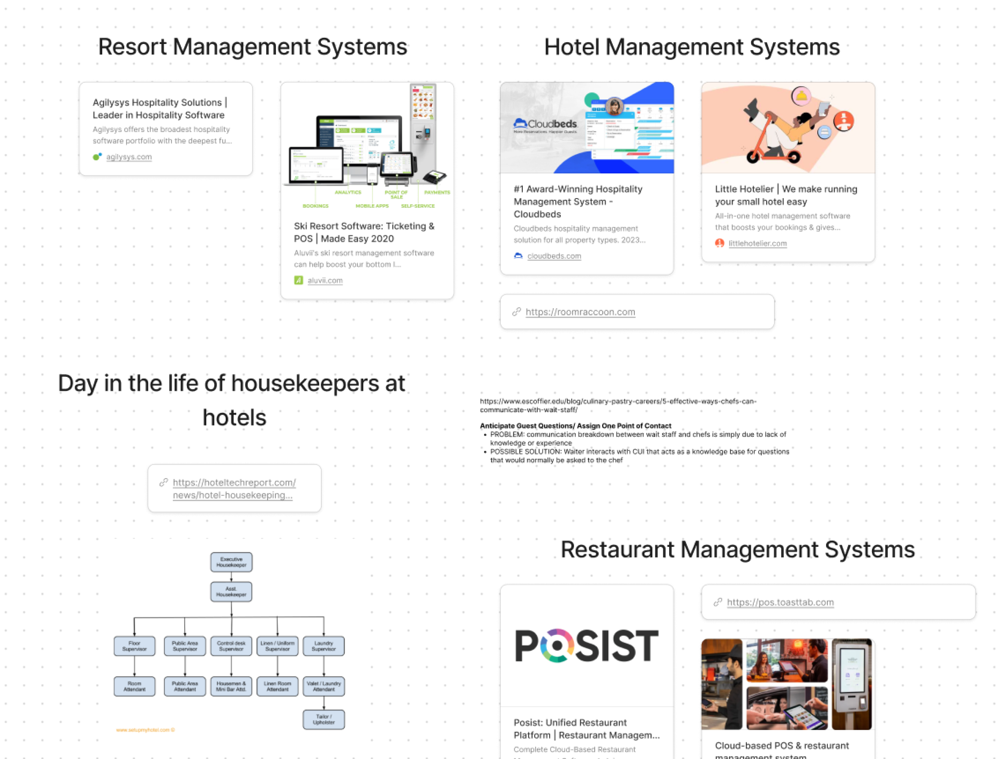
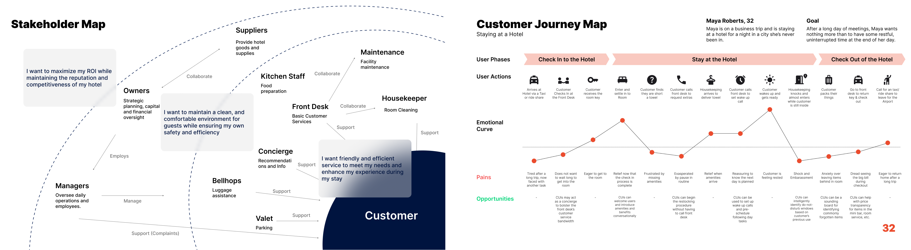
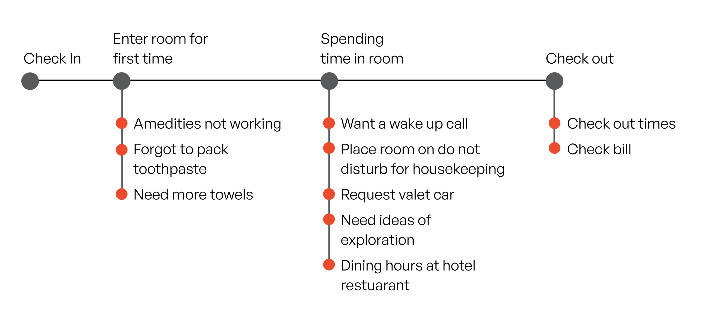
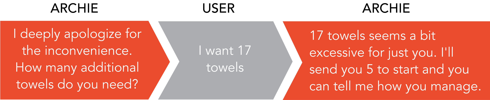

ARCHIE: CONVERSATIONAL AGENT for HOTELS

Overview
As part of my Human-Computer Interaction studio class, our assignment was to design a conversational agent for our giving domain: hospitality. My primary responsibility was leading the ideation process for the agent and carefully considering the user experience throughout the design.
Background
Team
- Michael Auld, Team member
- Charlene Chen, Team member
- Yueer Tang, Team member
The challenge
Create a conversational agent that supports various types of interactions, including transactions and more complex tasks
Narrowing our domain
Conducted secondary research within 4 subdomains of hospitality to identify the ideal ecosystem for our problem
We conducted research in 4 subdomains: (1) Restaurants (2) Hotels (3) Resorts (4) Concerts

We decided to narrow our scope down to the hotel industry, because we identified a problem that we felt could be solved by the characteristics of a conversational agent: 87% of hotels experience staffing shortages, leading to increase strain and decreased service. This lead us to our overarching question:
How do we give hotel guests an elevated experience without increasing work load for employees?
Stepping into the shoes our of user(s)
Modeled a stakeholder and customer journey map map to understand how different actors interacted within the hotel ecosystem

Leveraging the strengths of a conversational agent
Conversational agents can streamline requests and leverage conversational principles to nudge guests
Once we understood the journey of our target user: a hotel guest and how they interact with other staff members. We identified areas of automation along the customer journey to serve as prompts for our conversational agent: Archie.  We also saw a clear opportunity to push the bounds of our conversational agent further by leveraging the characteristics of conversation to nudge guests by:
- offering reminders
- anticipating needs
- providing suggestions
Keeping the user in control
Created a “key lock” system to address the issue of privacy and keep the user in control
We had to very carefully consider when and how our CUI would interface with a guest, especially with the premonition that conversational agents are always listening (think Alexa).
We went ideated through an entire spectrum of solutions and finally landed on an artifact “unlocking” Archie. We decided to use the hotel keycard itself as a key to Archie.
Inserting a key card to enable power is a familiar action in the context of a hotel room. Additionally, by incorporating this physical toggle, we gave the users a sense of control, without the addition of more artifacts.
Bringing Archie alive
Incorporating humor as a mechanism to humanize our conversational agent and increase the comfortability for the user
One of the biggest pieces of critique that our group received was the fact that our conversational agent seemed “too robotic”. We brainstormed different ways to humanize our agent and landed on leveraging humor as a technique. An example of this is: 
What I learned